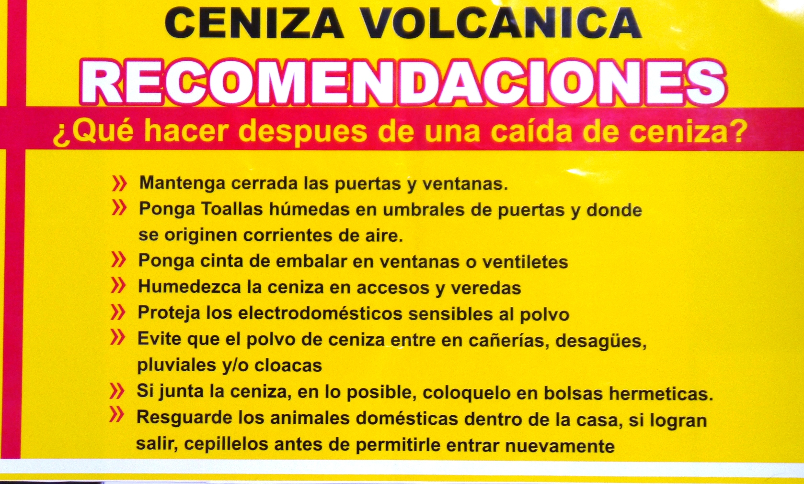
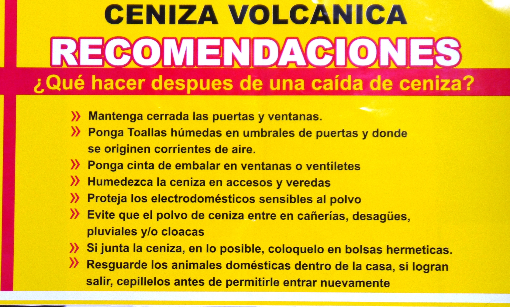

Volcánes
¿Que es un volcán?
Según la mitología romana, Vulcano era el dios del fuego y los metales. Casado con Venus y padre de Júpiter y Juno, Vulcano era el creador de armas y armaduras para los héroes. La palabra volcán proviene de Vulcano. Se trata de un conducto que establece comunicación directa entre la superficie terrestre y los niveles profundos de la corteza terrestre. Los volcanes son aberturas que se encuentran en montañas o en la tierra; cada un cierto periodo de tiempo, expulsan lava, gases, cenizas y humo.

 
